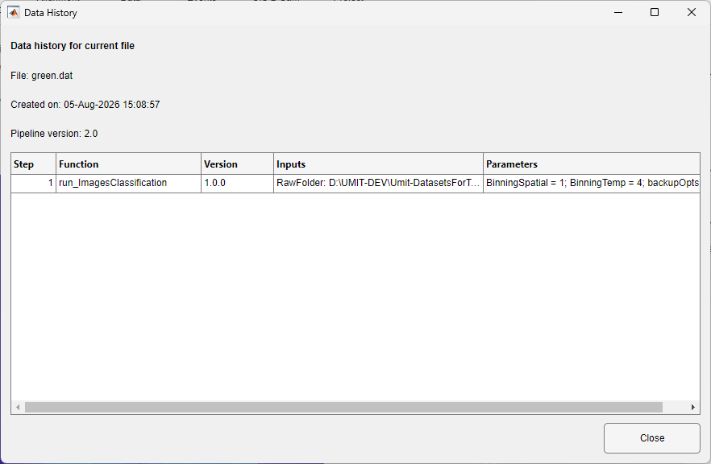

The tab reports the current input file, graph status, last outputs, and latest-run summary.
Data processing is managed by Pipeline Manager. DataViewer keeps one processing graph for the active Save Folder. The current file appears at the start of that graph as an input node: it represents the already-open file and is not another copy of the data. Closing Pipeline Manager keeps the graph and last result available until you switch Save Folders or close the viewer.
The tab reports the current input file, graph status, last outputs, and latest-run summary.
After a run, DataViewer separates permanent, temporary, and viewer-compatible outputs. If several compatible images exist, an output-selector dialog shows file, source step, output name, type, and persistence. Non-image reports and terminal results stay on disk and are summarized rather than opened as images.
By default, image results returned to DataViewer are stored as temporary files. This supports quick exploration without filling the Save Folder with every intermediate result. If you do not choose File > Save, the temporary image is deleted when its viewer lifecycle ends—for example, when you switch files, reset the processing context, or close the app after confirmation.
Choose Utilities > Data History to inspect how the current file was produced. Each row identifies an analysis function, its version, its input sources, its output, and the parameter values used. The information comes from dataHistory.mat and is read-only in this dialog.

| Command | Writes | Source changed? |
|---|---|---|
| File > Save | A selected data file | No. |
| File > Export > to tif | TIFF image data | No. |
| ROIs > Save | .roi | No image samples changed. |
| ROIs > Export ROI data | CSV tables | No. |
| Data History | Nothing; displays dataHistory.mat | No. |